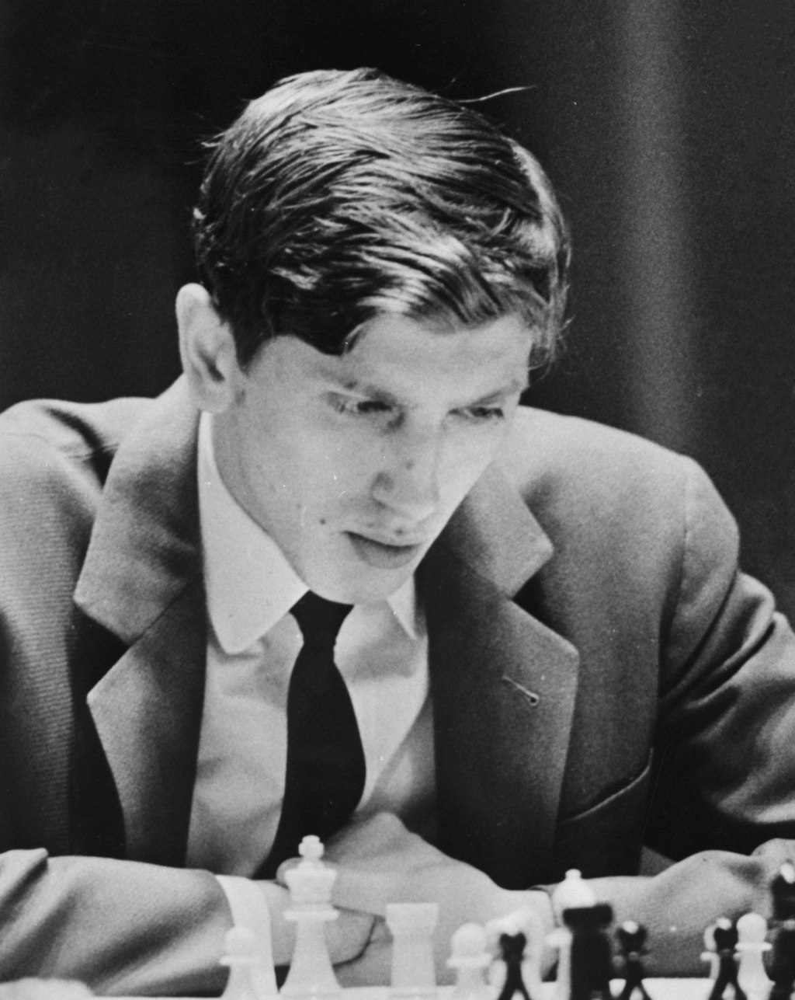

Chess world Champions

Since 1886, there have been 17 undisputed World Champions of chess.
- Wilhelm Steiniz (1836-1900), World Champion 1886-1894
- Emanuel Lasker (1868-1941), World Champion 1894-1921
- José Raúl Capablanca (1888-1942), World Champion 1921-1927
- Alexander_Alekhine (1892-1946), World Champion 1927-1935 and 1937-1946
- Max Euwe (1901-1981), World Champion 1935-1937
- Mikhail Botvinnik (1911-1995), World Champion 1948-1957, 1958-1960, and 1961-1963
- Vasily Smyslov (1921-2010), World Champion 1957-1958
- Mikhail Tal (1936-1992), World Champion 1960-1961
- Tigran Petrosian (1929-1984), World Champion 1963-1969
- Boris Spassky (1937-), World Champion 1969-1972
- Bobby Fischer (1943-2008), World Champion 1972-1975
- Anatoly Karpov (1951-), World Champion 1975-1985
- Garry Kasparov (1963-), World Champion 1985-2000
- Vladimir Kramnik (1975-), World Champion 2000-2007
- Viswanathan Anand (1969-), World Champion 2007-2013
- Magnus Carlsen (1990-), World Champion 2013-2023
- Ding Liren (1992-), World Champion 2023-